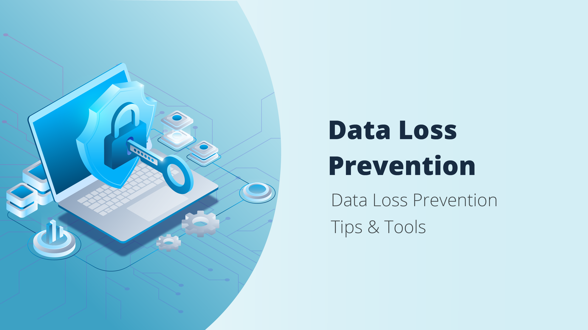

MAIN SERVICES;
NO. 1
data mining
Data mining is the process of discovering patterns, trends, correlations, or useful information from large sets of data. It involves using various techniques from statistics, machine learning, and database systems to analyze and interpret data. The primary goal of data mining is to extract valuable insights from data, which can be used for decision-making, prediction, and knowledge discovery.
NO. 2
Data analysis
Data analysis is the process of inspecting, cleaning, transforming, and modeling data with the goal of discovering useful information, drawing conclusions, and supporting decision-making. It involves using various techniques and tools to analyze and interpret data, uncover patterns, and derive meaningful insights. Data analysis is a crucial step in the broader field of data science and is employed across various disciplines and industries.
-
Ethical hacking
Ethical hacking, also known as penetration testing or white-hat hacking, refers to the authorized and legal practice of probing computer systems, networks, or applications for security vulnerabilities. The individuals who perform ethical hacking are known as ethical hackers or penetration testers. Their primary goal is to identify weaknesses in the target systems before malicious hackers can exploit them for unauthorized access or malicious purposes.
-
Firewalls
A firewall is a network security device or software that monitors and controls incoming and outgoing network traffic based on predetermined security rules. The primary purpose of a firewall is to establish a barrier between a trusted internal network and untrusted external networks, such as the internet. By doing so, firewalls help prevent unauthorized access, monitor and filter network traffic, and protect against potential cyber threats.
-
Data loss prevention(DLP)
Data Loss Prevention (DLP) is a set of strategies, tools, and processes designed to protect sensitive data from unauthorized access, sharing, or exposure. The goal of DLP is to prevent the accidental or intentional loss of sensitive information, such as intellectual property, financial data, personally identifiable information (PII), and other confidential data.
-
Email security
Email security refers to the set of measures and protocols implemented to protect email communication from unauthorized access, data breaches, and other cyber threats. Given that email is a common and essential communication tool for individuals and businesses, securing email systems is crucial to prevent the compromise of sensitive information, maintain privacy, and protect against various cyberattacks.
(network security)

Network security refers to the practice of protecting computer networks and their components, including hardware, software, and data, from unauthorized access, attacks, and damage. The primary goal of network security is to ensure the confidentiality, integrity, and availability of information within a network.
legal hackers and testers

Legal hackers and testers refer to individuals or professionals who engage in activities related to ethical hacking, penetration testing, and security assessments with proper authorization and adherence to legal and ethical standards. These individuals play a crucial role in helping organizations identify and address vulnerabilities in their computer systems, networks, and applications before malicious hackers can exploit them.
cotrolled firewall operations
Controlled firewall operations refer to the intentional and organized management of a firewall to ensure its proper functioning, security, and alignment with organizational policies. This involves setting up, configuring, monitoring, and maintaining the firewall to control network traffic and protect the network from unauthorized access or malicious activities. Here's an explanation of the key aspects of controlled firewall operations:
Data Loss Prevention(DLP)
It is highly recommended to take proactive measures in safeguarding your valuable data and devices. This entails creating backups for your files, ensuring the protection of your hardware, imparting knowledge to your employees regarding data security, maintaining the cleanliness of your computer, employing antivirus and anti-malware software, encrypting sensitive data, keeping software up-to-date, and formulating comprehensive security policies for all your devices and endpoints.
email security

Anti-virus-Email antivirus refers to the application of antivirus measures specifically designed to scan and protect email systems from malicious software (malware) that may be transmitted through email messages. The goal of email antivirus solutions is to detect and prevent the spread of viruses, worms, trojans, ransomware, and other types of malware via email.
Spam filters-Spam filters are software or services designed to identify and filter out unsolicited or unwanted email messages, commonly known as spam. The primary purpose of spam filters is to reduce the volume of unwanted emails that users receive and to protect them from potentially harmful or malicious content often associated with spam.